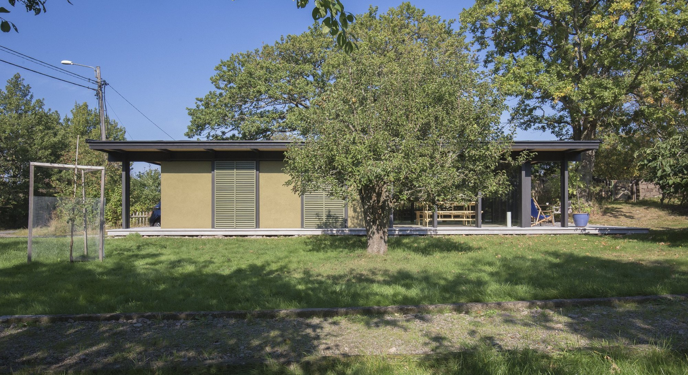

Hoppa till innehållet
STUDIO
KONTEXT
Projekt
Studion
Tjänster
Kontakt
Meny
STUDIO
KONTEXT
Stäng
Projekt
Studion
Tjänster
Kontakt
studiokontext00@gmail.com
0709 43 08 78
Berätta om
din plats.
Har du ett projekt i tankarna? Hör av dig med det du vet så tar vi samtalet därifrån.
studiokontext00@gmail.com
0709 43 08 78
Tjurkö
Herrgårdsviksvägen 22
373 63 Tjurkö
Visa på karta
Malmö
Kapellgatan 18 U
214 21 Malmö
Visa på karta
Instagram
Facebook

Gröna huset, Tjurkö · Foto: Johan Stenbeck